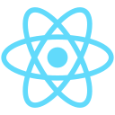
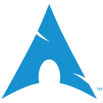
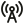
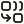
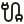
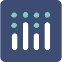
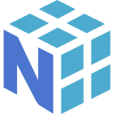

01 / SECURITY

React✳ CYBERSECURITY · SYSTEMS · CURIOSITY
Hey, I’m Manthan Garg.
I build security tools, explore Linux internals, and turn ideas into things that work.
Student. Builder. Forever curious.
Chandigarh, India01 / MY PROJECT FOLDERS

React02 / MORE THAN A README
I’m a Computer Science Engineering student at CSOET, Himachal Pradesh, drawn to the way things work under the hood.
My interests live somewhere between cybersecurity, Linux, and building useful software. I like turning old hardware into fast development machines and turning “what if?” into something I can test.
Outside my own projects, I help bring people together through the IEEE Student Branch as Vice Chair.
CURRENTLY EXPLORING
OS internals, endpoint threat detection, networking, and low-level systems.
A LITTLE PERSONAL
Old hardware.
A fresh Linux install.
A very good afternoon.
03 / THE TOOLBOX

Arch Linux
IoT architecture
Sensor fusion
REST APIs
Plotly
NumPy04 / LEARNING & LEADING
2024 — 2028
B.E. Computer Science Engineering · CGPA 8.34
Network security, cryptography, operating systems, data structures, and object-oriented programming.
COMMUNITY & LEADERSHIP
Vice Chair · CSOET, Himachal Pradesh
Technical events, volunteer coordination, cross-chapter collaboration, and welcoming freshers with hands-on activities.
BEYOND THE CAMPUS
Team member
Regional student activities and outreach, including sponsorship outreach and the official IEEE DSSYWLC 2025 brochure.
05 / THE PLAYGROUND
A small corner for the curious. Open a terminal, try a tiny CTF, or calculate a hash. Everything runs in your browser.
06 / YOUR NEXT GOOD IDEA
Have a project, an open-source idea, or something interesting to share?
Email me